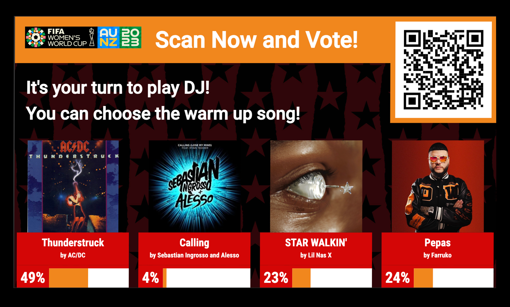

Jumbotron

Adjust your screens to 1920x1080 in your browser's inspector because it's showtime! I was given the exciting task of building a jumbotron for sports games. This unique jumbotron lets fans join in the fun by scanning a QR code when activated and voting for their favorite songs while at a game. The song with the most votes wins and gets played. Before developing the website, my team member and I created sketches and both low-fidelity and high-fidelity mockups of the jumbotron in Figma, meticulously designing each component for the final build. Be sure to view it through your browser's inspector to fully experience what the spectators will see and experience, as it is not available for mobile and tablet views.